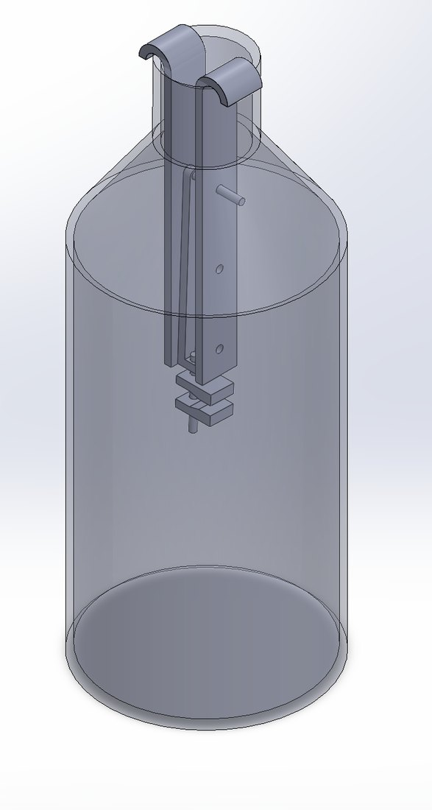
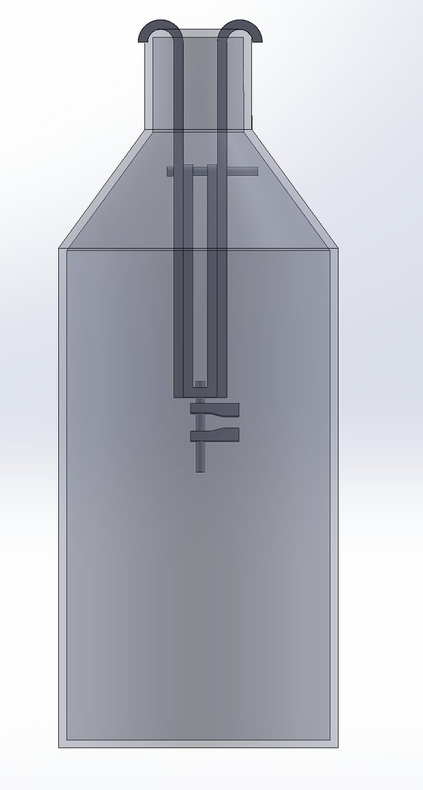
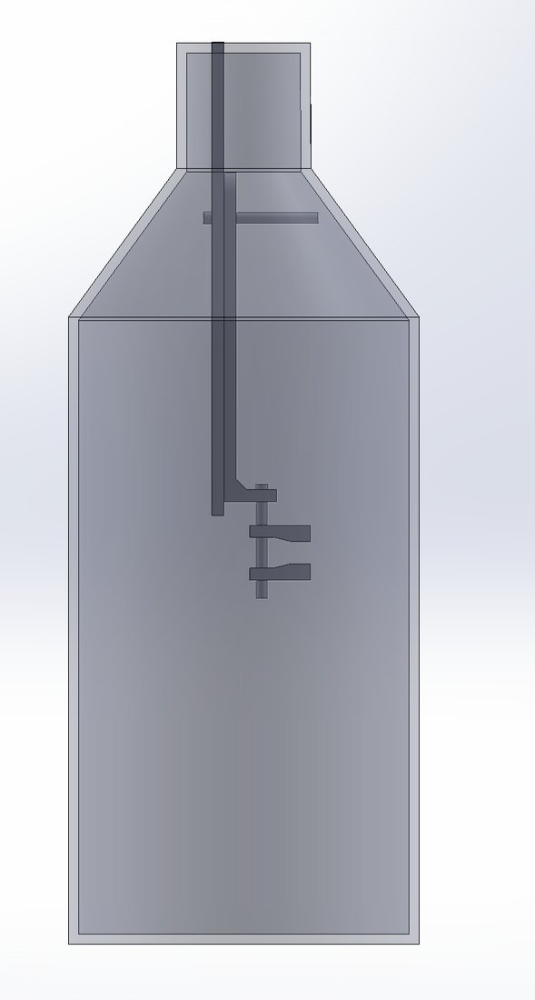
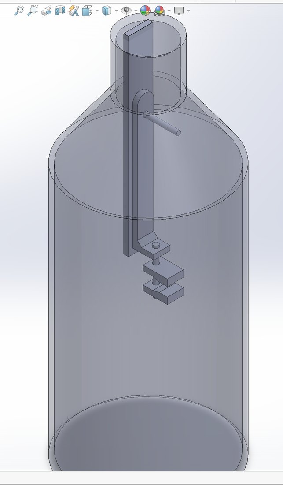
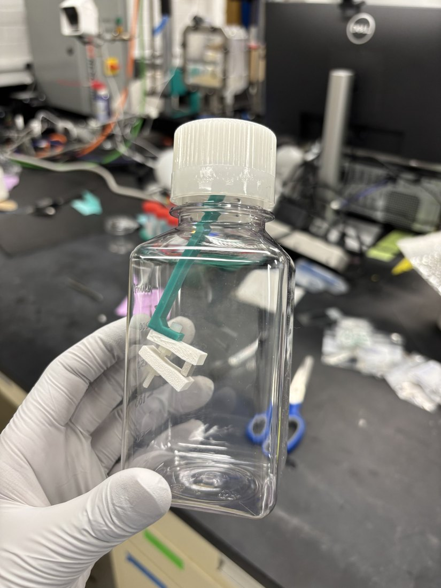
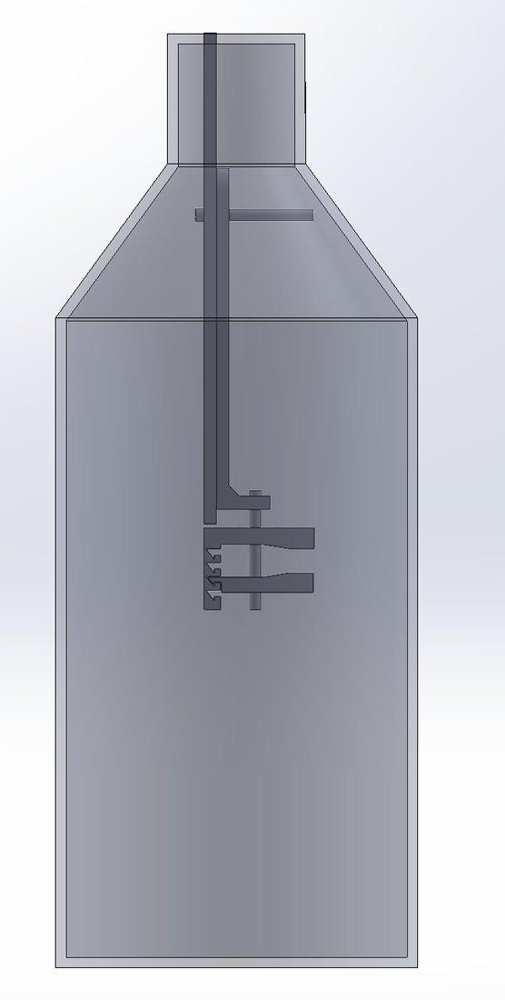
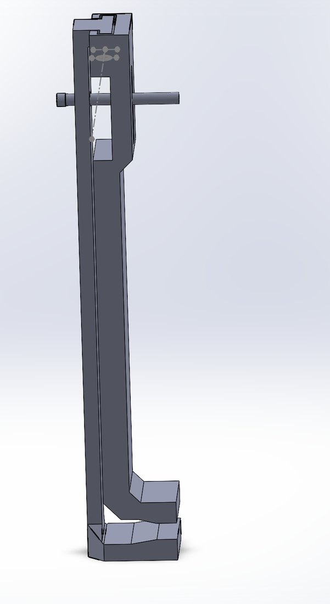
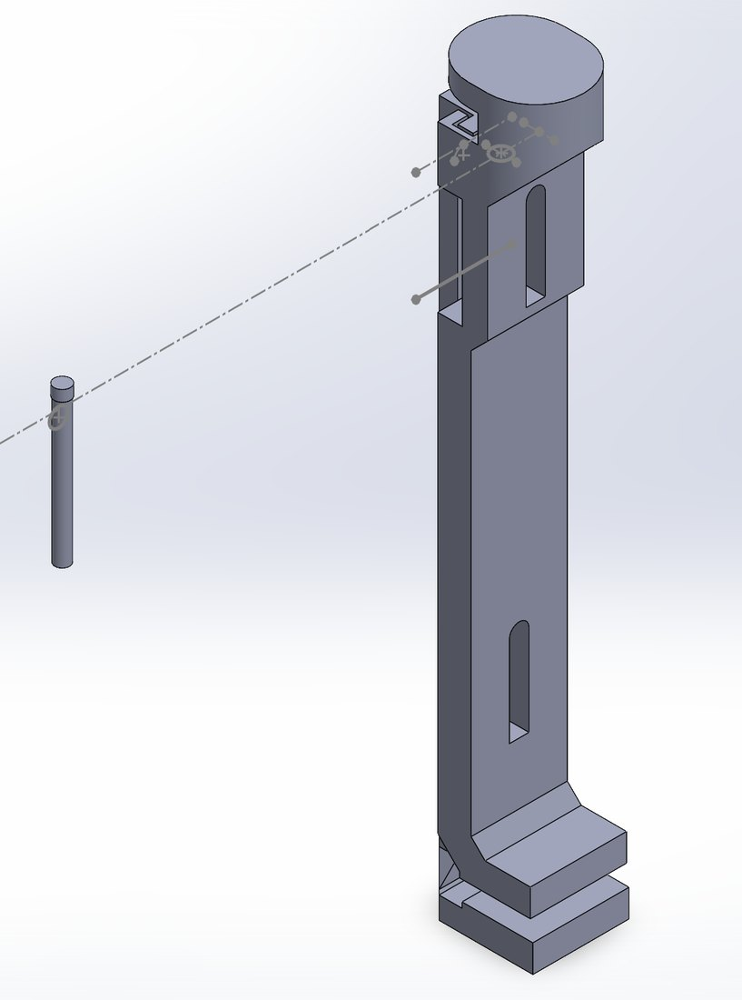
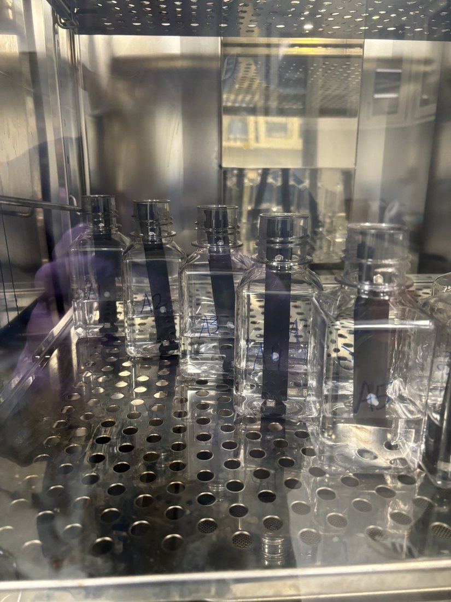
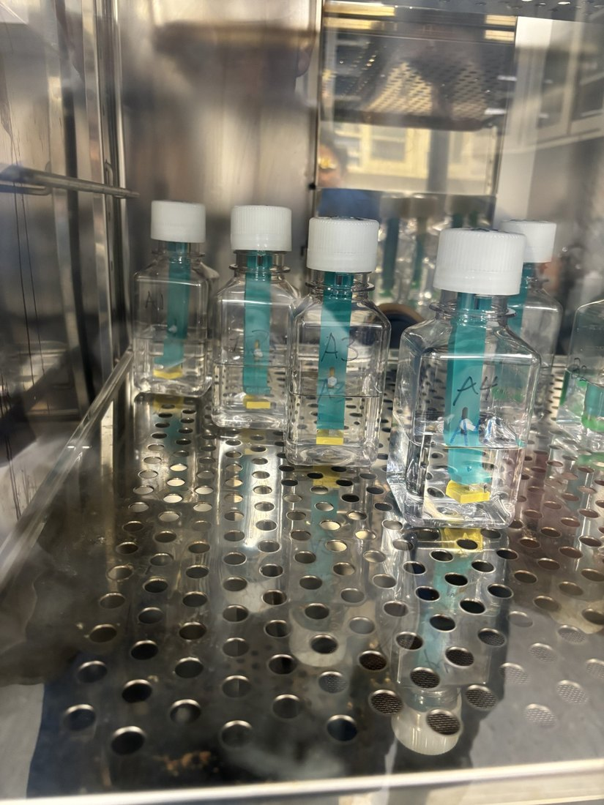

Weihs Lab: Hopkins Extreme Materials Institute
Static Suspension of Mg-Al in Corrosion Fluid
The summer of 2026, I engaged in research that began that April, studying how the properties of Magnesium alloys change under both corrosion and cyclic loading (fatigue). The findings ultimately inform us on the biodegradable and tensile strength properties of Magnesium-made medical implants in conditions vastly similar to those of the human body, inspiring a 3-point bend fatigue setup (due to constant flexural joint movements), slightly alkaline corrosion pH (7.4–7.5), and chamber temperature of 37 C (body temperature).
Halfway through the summer, I led a project to supplement the findings from the Magnesium corrosion-fatigue study, where we would compare the mass-loss corrosion rate of samples in the same corrosion fluid but without any applied loading.
Corrosion vs. Corrosion-Fatigue
In materials science, heat treatments are known to change the physical properties of metals like Magnesium, so we implemented three different heat treatments (150 C, 10 hours; 450 C, 24 hours; and 450 C, 1 min) for the corrosion-fatigue study. These heat treatments needed to carry over for my corrosion-only study, meaning we needed to submerge about 12–15 samples at the same time for about the same duration as the fatigued samples. This is three groups of 4–5 samples.
These factors, in addition to limited fluid supply, constrained the size of bottles I was allotted for installing the corrosion fluid, further constraining the size of the samples. My PhD mentors normalize the ratio of sample surface area to fluid volume to 0.8 in order to prevent overestimating the corrosion rate. This meant for a fluid volume of about 130 ml, an adequate surface area is around 100 mm². That required us to submerge samples of dimensions 5×5×2 mm!
Now, we couldn't just drop the square samples in the bottle, since the surface that rests on the bottom of the bottle always corrodes messily. This influenced my very first design of a tiered clamping device that hooks around the bottle's top and is fastened mainly by M3 bolts and nuts.


Version 0: 6 parts in total (excluding nuts and bolts)
The 5×2-mm sides of the small square sample sits between the two bottom clamps, which are adjustable until you fasten them with M3 nuts.


Version 1: 4 parts in total
After 3D-printing the parts, I noticed that I could support the centerpiece that holds the two clamps with only one hook, so I redesigned the assembly to have two less parts. Additionally, I had learned from my mentors that we would need to seal the bottle top with a cap to ensure that the pH remains around 7.5–8 while in the incubator. So I planned to attach the assembly to the cap by adhesive, which they confirmed was okay.

Here's where I ran into my first challenge. When I installed a test sample into the clamps, and pressed the bottom clamp into the sample to ensure a tight fit, the M3 bolt that holds the clamps bends sharply. This is a result of the bolt being plastic, as metal bolts will corrode in the fluid.

Initially, in order to combat this, I researched snap-fit clamping mechanisms. While the snap fit does add the needed structural support to reduce bending, it removes the original adjustable feature of the clamper. This is vital since every sample we machined and polished varied in thickness by about 0.1 mm, a substantial amount at this scale.
Version 1.5: With snap-fit steps so clamping can be tighter

This altogether led me to think, how can I both maintain the adjustability feature while also promoting greater structural stiffness in the region where the square is clamped? I realized that I could reduce the design to two parts, having the bottom and top clamps extend to the cap itself, where the bottom clamp locks in to the top clamp from the top and cannot be removed otherwise. Then, inserting a bolt through a slot coincident in the top and bottom clamps, you can slide the bottom clamp up and down and lock the fixture with a nut with an outer radius larger than the slot.
Version 2: 2 parts (simplest, 2-minute assembly)

While this proved even more promising, the assembly still faced warping in the bottom region where the square samples are clamped. I made two final changes: increasing the infill density of the PLA 3D print from 20% to 70% and adding a second slot so that there is little to no bend in the clamping area.
Final Version — ensuring there is no warping at the back/bottom clamp


From here onwards, I had utilized this design for every machined sample. After almost 30 submersions, not one square had fallen out of the clamping assembly during the 55 hours of corrosion! Note that multiple iterations of the experiment had been carried out due to the measured pH after corrosion rising above 8.0, causing us to adjust CO₂ levels and open/closed bottles.